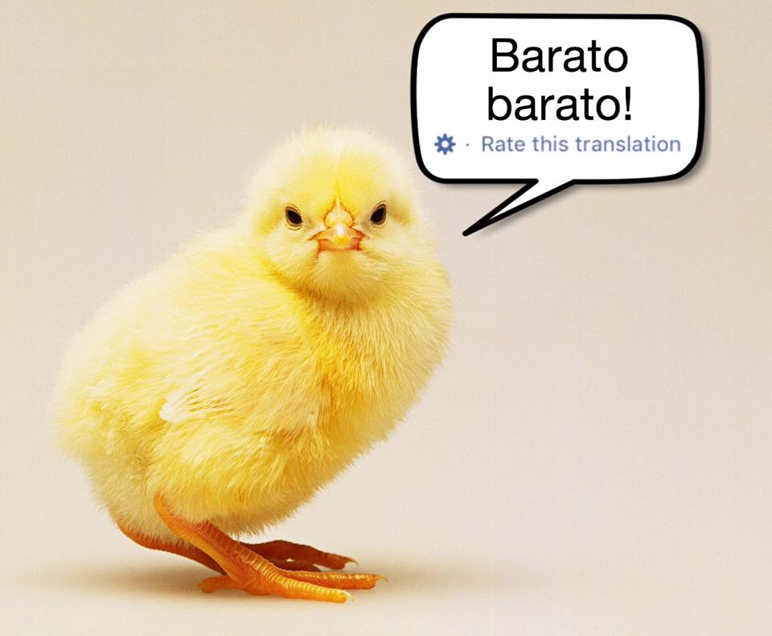
Please check out my guide to grade change and exception requests before sending one!
Truth in sentences
Ambiguity
Entailment
“Shades of meaning”
Connotation vs. Denotation
Gradient meaning
Connotation vs. Denotation continued
Gradient meaning!
Word Meaning Relationships
Word Sense
Lexical Semantics
Pragmatics and the Cooperative Principle
New, Novel, Contemporary, Up-To-Date, State-of-the-Art, Recent
Offended, insulted, outraged, butthurt, upset
Father, Dad, Papa, Daddy
“inner city” has a specific racial connotation in general use
“Lib” has a specific political connotation in general use
An indirect and “pretty” way to refer to something unpleasant or embarrassing or with a negative connotation
“We neutralized three combatants” rather than “We killed three enemy fighters”
“We expect another round of downsizing” rather than “You all are gonna get fired”.
“Could you point me to the powder room?” rather than “I have to defecate immediately.”
“The children were placed in a tender-age shelter” rather than “We stuck the children in a detention camp”.
The same word may have different connotations among different groups
What’s offensive to one group of people might be the neutral term to another
‘We prefer the term…’
People may not be aware of the connotations of words they’re using
… and most importantly…
Imbecile, Idiot, Slow, Retarded, Mentally Handicapped, Developmentally Disabled
This phenomenon (euphemisms turning into negative terms then being replaced) is called the “Euphemism Treadmill”
“Oh, I always wondered what the internet was like in the late 1900s”
“The world of cell phones was very different at the turn of the century”
“Instructors used overhead projectors as late as last century”
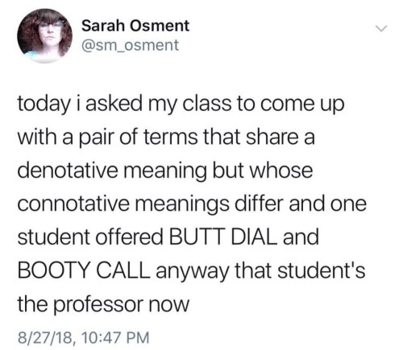
“Butt dial” and “Booty call” may be two different compounds.
Booty text? Butt Text?
Or are they Adjective+Noun pairs?
Does “thin” mean the same thing as “gaunt”?
When does “idiot” stop meaning “intellectually disabled person” and start meaning “stupid person”?
It’s hard to figure out which of many word options carries the best choice of meaning
Where words start with one meaning and develop a new one
This can cause a new word sense, or just an overall change in meaning
Think ‘influencer’ or ’ mid’
… But even single words are a bit hard to define
“Bird”
“Chair”
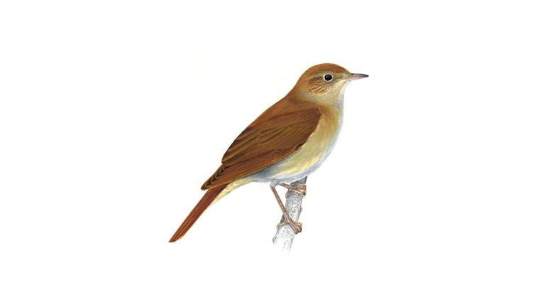


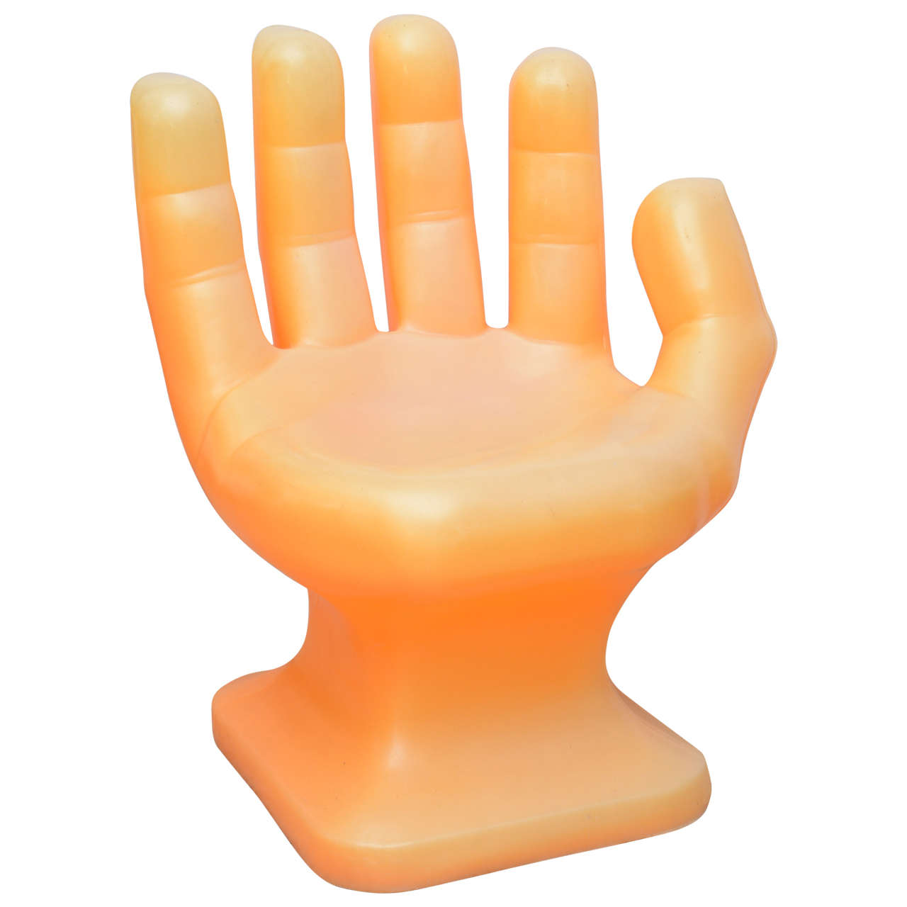

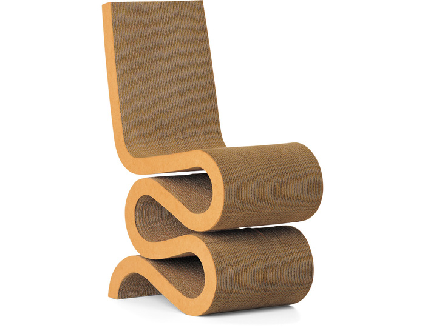
| ### On a scale from A (Most) to E (Least), how chair-like is this… |
| 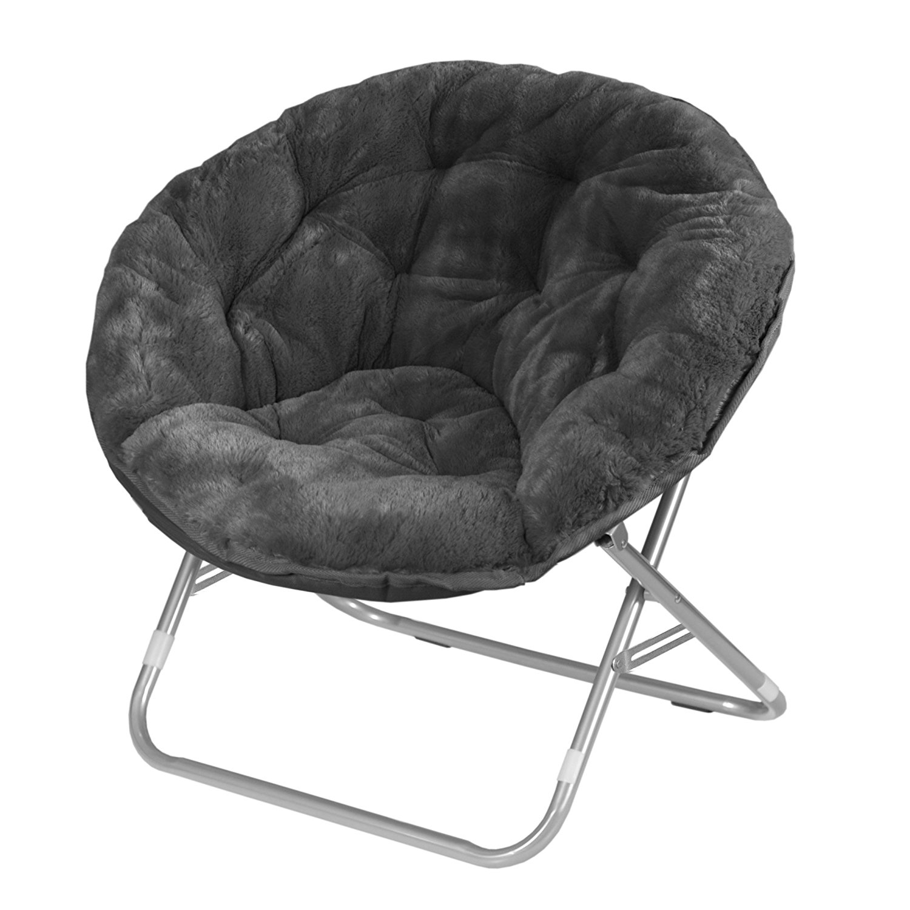 |
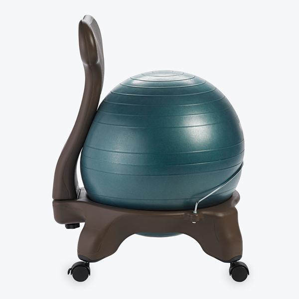
A series of pizza boxes duct-taped together to a sittable height
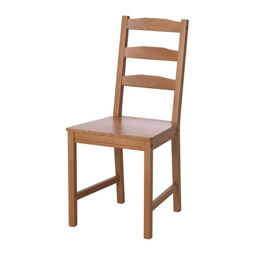
An example of a given word or meaning which is “central” to the category, a “better example” of the idea.
The Pope is pretty far from the prototype for “Bachelor”
An emu is pretty far from the prototype for “Bird”
A stack of pizza boxes is pretty far from the prototype for “Chair”
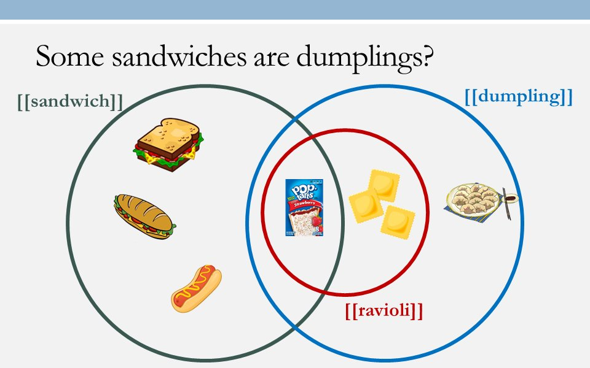
(Credit to Emily Atkinson, University of Michigan)
Different words have related meanings
… and we find it helpful to talk about those relationships by classifying them
Synonym/Antonym
Homonym/Homophone
Hyponym/Hypernym
Metonymy
A words which shares the same denotational meaning, but with different spoken form
e.g. Cop/Police Officer, Sick/Ill, Sofa/Couch
The usage may be slightly different, but they ‘mean’ the same thing
UCSD bans raffles
They are legally complicated under California law
Instead, we have “opportunity drawings”
🤦🏻♂️
A word which has a (nearly) opposite denotational meaning
e.g. sick/healthy, happy/sad, dead/alive, do/undo
“exactly” opposite is hard, but nearly opposite is fine
Always
Coming
From
Take
Me
Down
A word which is a specific instance of a broader class
The greater class is a “hypernym”
“X is a type of Y”: X are hyponyms, Y is the hypernym
When word X, related to word Y, is used to represent the same meaning as Y.
Beijing has rejected the offer (Beijing == Chinese Gov’t)
We speak several tongues in this classroom (Tongue == Language)
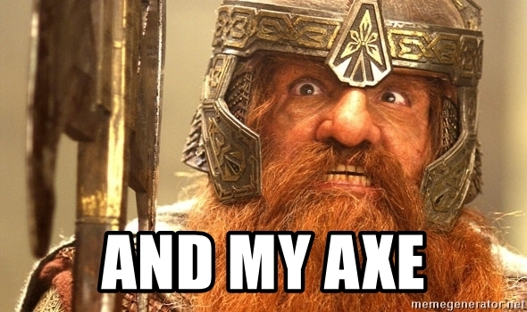
Small
Big
Large (as in “He was paid 200 large ($200,000) to switch companies”)
Large (as in “A massive corporation and a small startup were both bidding for spectrum. Large won, as always.”)
Size
Small
Large (as in “He was paid 200 large ($200,000) to switch companies”)
Large (as in “A massive corporation and a small startup were both bidding for spectrum. Large won, as always.”)
Size
Sectional
Loveseat
Cushion
Furniture
Living Room
Sectional
Loveseat
Cushion
Living Room
France in “I spent last summer in France”
The White House in “The White House has a large security perimeter around it”
Hagyeong in “Hagyeong said it’s OK, so we’ll use her place”
The Dean in “We’ll have to see if the Dean approves”
Geisel in “Provided that Geisel agrees, we’ll finalize the new library policy next week”
France in “I spent last summer in France”
The White House in “The White House has a large security perimeter around it”
Hagyeong in “Hagyeong said it’s OK, so we’ll use her place”
The Dean in “We’ll have to see if the Dean approves”
A word which shares the same spoken and written form, but has a different meaning
e.g. Bank (river)/Bank (institution), Mug (coffee)/Mug (street robbery), Phone (iPhone)/Phone ([t] or [ŋ])
Homonyms are words which are spelled the same and sound the same but have different senses
A word which shares the same spoken form, but has a different meaning and is spelled differently
Homonym is a Hyponym of Homophone.
e.g. they’re/there, but/butt, banned/band, to/too
Roger busted the bank.
The fireplace was lit.
The specific meaning of a word being used in a given situation
She fit the package into the over-full trunk
She’s fit to work on your project, given her background
She’s having fits about the new deadline
She’s quite fit for her age
That fit nicely into my schedule
She fits in well in San Diego
I hit the dragon with an arrow
SchwaCo stock hit $500 a share
Jiaqi loves to hit the golf course on Fridays
The mafia hit stunned the local government
The fingerprints had three hits on old records
I hit on the dragon at the sleazy bar
I hit up the dragon for some gold until payday
We talked about how some verbs don’t take an object
Some verbs take an object always
Some verbs take two objects
Different verbs demand different arguments
Some element of a sentence which helps complete the principal meaning of the sentence.
Matt hit the dragon
Xinyao baked Riyam a cake
Maria fired six rounds.
“I hit the dragon with an arrow”
Thing doing the hitting
Thing being hit
How the hitting is done (manner, or instrument)
“SchwaCo stock hit $500 a share”
Thing hitting the level/goal/landmark
The level/goal/landmark
No instrument argument is possible
“Jiaqi loves to hit the bowling alley with his friends”
Person going to the activity (animate)
Activity
Doesn’t take an inanimate subject or an instrument
*“The ball hit the links on weekends”
*“Andy loves hitting the ballfield with his bat”
“Sherry hit on Steve at the party”
Person making the advances
Person hit on
No instrument is permissible
“I hit up the dragon for some gold”
Person making the request
Request
Requested from
All three arguments are required
“I hit up the dragon” (For?)
“I hit up for money” (Who?)
“Hit up for money” (???)
Can’t be ditransitive (*“I hit up the dragon some gold”)
A set of arguments which it expects
… which combine to give the overall meaning of the sentence
This is often called a ‘subcategorization frame’
These are lexically specific
This information can be seen as a part of the verb’s meaning
The PropBank Project has been working to produce frames for every verb in large chunks of text
Different sets of arguments can imply different verb senses
It helps us understand text better
It lets us identify semantic roles
Specific terms for different roles in the sentence
Your book gives terms like “Agent”, “Source”, “Experiencer”, “Theme”, “Goal”, “Instrument”
Is the subject in “Darnell fit the package in the trunk” really doing the same thing as in “Darnell fits well at UCSD”?
Is the object in “Andre the Giant threw the ball” really so different than “Andre the Giant threw the wrestler”?
Should we spend hours discussing the details of semantic role labels?
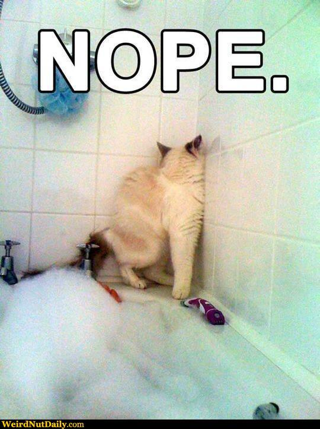
Each frame specifies what arguments the verb expects
… and that knowledge is very useful for understanding what it all means
“What does this verb mean, everywhere?”
“What is always true about the relation between”up” and “down”?”
“What is always true about Y, given X?”
“Can you see?”
“I’m open”
“Take that”
“I feel you”
The study of meaning in a discourse context
The semantic meaning of a word doesn’t depend on the context.
The meaning of “fast” doesn’t turn into “slow” in a conversation
Entailment is true in every possible universe.
It considers the current conversation
It assumes things about the current world
It uses elements of our situation to ‘fill in the blanks’
Conversation and linguistic interaction
We have conversations with goals in mind
Social goals
Practical goals
Informational goals
… and we assume some cooperation
“I will try to act in such a way as to help the exchange of information, rather than hinder it”
This is not a rule in the sense of grammatical rules, but a guiding principle
It can be broken down into four maxims, developed by H. Paul Grice
“Tell the truth and give accurate information”
Do not say things you believe to be false
Do not say things you don’t know (or have evidence to believe) to be true
“Give enough information, but not too much”
Be as informative as required, but not more so
It’s just as uncooperative to give too much information as to give too little
“Give relevant information and only relevant information”
Your responses should have something to do with the matter under discussion
This is also called the maxim of ‘relevance’
“Be as clear as you can be”
Don’t be obscure when you can avoid it
Avoid ambiguous words or phrasings
Avoid unnecessary wordyness
Organize your thoughts
Your Roommate Tasha arrives home, and asks where your other roommate Levon is. You’re not sure, but you know Levon left earlier.
“Tell the truth and give accurate information”
Do not say things you believe to be false
Do not say things you don’t know (or have evidence to believe) to be true
“Give enough information, but not too much”
Be as informative as required, but not more so
It’s just as uncooperative to give too much information as to give too little
“Give relevant information and only relevant information”
Your responses should have something to do with the matter under discussion
“Be as clear as you can be”
Don’t be obscure when you can avoid it
Avoid ambiguous words or phrasings
Avoid unnecessary wordyness
Organize your thoughts
Words have relationships to one-another
Words expect certain arguments, and those depend on word sense
We assume people are cooperative in conversation
… and the Gricean maxims describe what that usually looks like
We'll wrap up Gricean maxims and talk about other elements of pragmatics
Bring meaning, in context